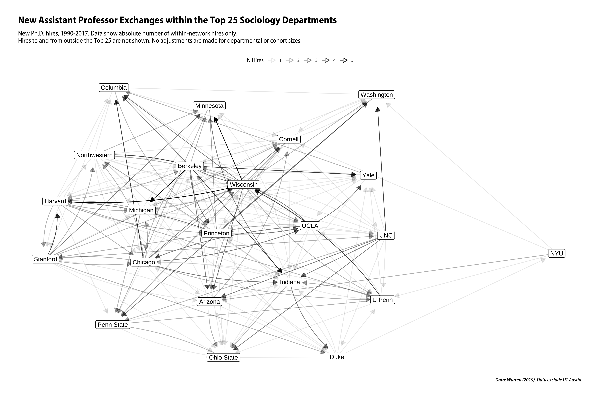

Some network data, for teaching purposes.
Iliad data are from Gabriel Rossman (2017) “Glory and Gore”, Contexts 16(3):42–47. Original data files available at https://osf.io/jasf4/.
Sociology Top 25 Jobs data are from John Robert Warren, (2019) “How Much Do You Have to Publish to Get a Job in a Top Sociology Department? Or to Get Tenure? Trends Over a Generation”, Sociological Science February 27, 2019 doi://10.15195/v6.a7. Original data files available at https://www.rob-warren.com/pub_trends.html.
kjhnet is a data package.
You can install the beta version of kjhnet from GitHub with:
remotes::install_github("kjhealy/kjhnet")The package works best with the ggraph, tidygraph, and broader tidyverse libraries.
library(tidyverse)
#> ── Attaching core tidyverse packages ──────────────────────── tidyverse 2.0.0 ──
#> ✔ dplyr 1.1.4 ✔ readr 2.1.5
#> ✔ forcats 1.0.0 ✔ stringr 1.5.1
#> ✔ ggplot2 3.5.0 ✔ tibble 3.2.1
#> ✔ lubridate 1.9.3 ✔ tidyr 1.3.1
#> ✔ purrr 1.0.2
#> ── Conflicts ────────────────────────────────────────── tidyverse_conflicts() ──
#> ✖ dplyr::filter() masks stats::filter()
#> ✖ dplyr::lag() masks stats::lag()
#> ℹ Use the conflicted package (<http://conflicted.r-lib.org/>) to force all conflicts to become errors
library(ggraph)
library(tidygraph)
#>
#> Attaching package: 'tidygraph'
#>
#> The following object is masked from 'package:stats':
#>
#> filterLoad the data:
Some off-label use of Rob Warren’s Top 25 Sociology Jobs data.
library(ggraph)
library(tidygraph)
set_graph_style(family = "Myriad Pro SemiCondensed")
clean_dept_names <- function(x){
x <- stringr::str_replace(x, "California-", "")
x <- stringr::str_replace(x, "SUNY-", "")
x <- stringr::str_replace(x, "SUNY-", "")
x <- stringr::str_replace(x, "Illinois-Chicago", "UIC")
x <- stringr::str_replace(x, "U of Illinois", "UIUC")
x <- stringr::str_replace(x, "U of Pennsylvania", "U Penn")
x <- stringr::str_replace(x, "San Francisco", "UCSF")
x <- stringr::str_replace(x, "North Carolina", "UNC")
x <- stringr::str_replace(x, "N.C. State", "NC State")
x
}
(p1 <- socjobs %>%
filter(top25phd == "Yes", phd_dept != "Texas", job_dept != "Texas") %>%
select(phd_dept, job_dept) %>%
mutate(phd_dept = clean_dept_names(phd_dept),
job_dept = clean_dept_names(job_dept)) %>%
group_by(phd_dept, job_dept) %>%
tally() %>%
select(from = phd_dept, to = job_dept, weight = n) %>%
mutate(scale_weight = scale(weight, center = FALSE)) %>%
filter(weight > 0) %>%
as_tbl_graph() %>%
mutate(centrality = centrality_eigen(weights = weight)) %>%
ggraph(layout = "graphopt") +
geom_edge_fan(aes(alpha = weight),
arrow = arrow(length = unit(3, 'mm'), type = "closed"),
start_cap = circle(2, 'mm'),
end_cap = circle(8, 'mm')) +
geom_node_label(aes(label = name)) +
scale_edge_alpha_continuous(name = "N Hires") +
labs(title = "New Assistant Professor Exchanges within the Top 25 Sociology Departments",
subtitle = "New Ph.D. hires, 1990-2017. Data show absolute number of within-network hires only.\nHires to and from outside the Top 25 are not shown. No adjustments are made for departmental or cohort sizes.",
caption = "Data: Warren (2019). Data exclude UT Austin.") +
theme_graph(base_family = "Myriad Pro SemiCondensed") +
theme(legend.position = "top")
)
ggsave(here("man/figures/README-example-1.png"), p1, height = 10, width = 15, dpi = 300)